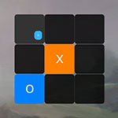
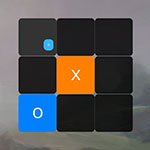

Tic Tac Toe
https://github.com/pokepetter/ursina/blob/master/samples/tic_tac_toe.py

if __name__ == '__main__' :
app = Ursina()
camera.orthographic = True
camera.fov = 4
camera.position = (1 , 1 )
Text.default_resolution *= 2
player = Entity (name='o' , color =color.azure)
cursor = Tooltip(player.name, color =player.color, origin =(0 ,0 ), scale =4 , enabled =True)
cursor.background.color = color.clear
bg = Entity (parent =scene, model ='quad' , texture ='shore' , scale =(1 6 ,8 ), z =1 0 , color =color.light_gray)
mouse.visible = False
# create a matrix to store the buttons in. makes it easier to check for victory
board = [[None for x in range (3 )] for y in range (3 )]
for y in range (3 ):
for x in range (3 ):
b = Button(parent =scene, position =(x,y))
board[x][y] = b
def on_click(b=b):
b.text = player.name
b.color = player.color
b.collision = False
check_for_victory()
if player.name == 'o' :
player.name = 'x'
player.color = color.orange
else :
player.name = 'o'
player.color = color.azure
cursor.text = player.name
cursor.color = player.color
b.on_click = on_click
def check_for_victory():
name = player.name
won = (
(board[0 ][0 ].text == name and board[1 ][0 ].text == name and board[2 ][0 ].text == name) or # across the bottom
(board[0 ][1 ].text == name and board[1 ][1 ].text == name and board[2 ][1 ].text == name) or # across the middle
(board[0 ][2 ].text == name and board[1 ][2 ].text == name and board[2 ][2 ].text == name) or # across the top
(board[0 ][0 ].text == name and board[0 ][1 ].text == name and board[0 ][2 ].text == name) or # down the left side
(board[1 ][0 ].text == name and board[1 ][1 ].text == name and board[1 ][2 ].text == name) or # down the middle
(board[2 ][0 ].text == name and board[2 ][1 ].text == name and board[2 ][2 ].text == name) or # down the right side
(board[0 ][0 ].text == name and board[1 ][1 ].text == name and board[2 ][2 ].text == name) or # diagonal /
(board[0 ][2 ].text == name and board[1 ][1 ].text == name and board[2 ][0 ].text == name)) # diagonal \
if won:
print ('winner is:' , name)
cursor.text = ''
mouse.visible = True
Panel(z =1 , scale =1 0 , model ='quad' )
t = Text(f'player\n{name}\nwon!' , scale =3 , origin =(0 ,0 ), background=True)
t.create_background(padding=(.5 ,.2 5 ), radius=Text.size/2 )
t.background.color = player.color.tint(-.2 )
if __name__ == '__main__' :
app.run()
